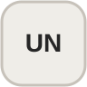
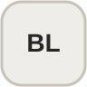

Projects / Games
Game projects
Selected game development work. Replace the placeholder videos, logos, names, descriptions, and tools with your final project content.
01
Project description
Write a short explanation of the game here: what it is, what problem or experience you wanted to create, and the parts you personally developed.
Tools


02
Project description
Use this area for your second game's concept, contribution, core mechanics, and the technical challenges you solved during development.
Tools
03
Project description
Add another project here or duplicate this section in the HTML whenever you need more entries. The alternating layout is handled automatically by the “reverse” class.
Tools